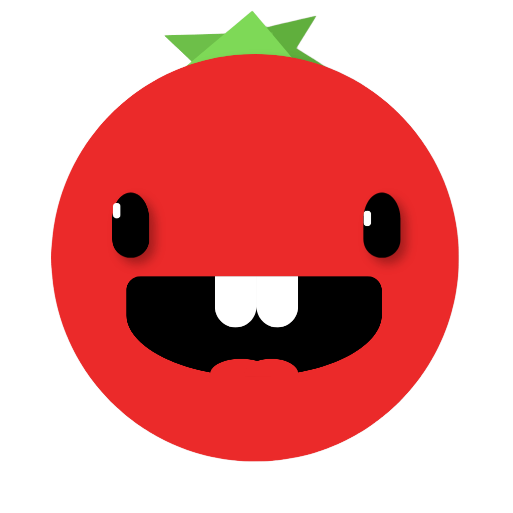

Popomus
Stats
Settings
Pomodoro
Short Break
Long Break
Pomodoro
25:00
#1
START
Active Task
Task Title
0/1 pomos
Tasks
Clear completed
Clear all tasks
Add Task
Est Pomodoros
+
-
Pomos:
0
/
0
Finish At:
--:--
(0.0h)
Choose a Theme
Sunset
Warm Earth
Dusk
Deep Night
Slate
Focus Statistics
0h
Total Focused
0h
Daily Average
0 days
Daily Streak
0
Total Cycles
Daily Focus Activity
7 days
14 days
30 days
Recent Focus Sessions
Settings
Timer (minutes)
Pomodoro
Short Break
Long Break
Long Break Interval
Focus cycles before triggering a long break
Auto-start Breaks
Automatically start break timer when focus completes
Auto-start Pomodoros
Automatically start focus timer when break completes
Sound Volume
Volume level for alarm chimes and preview
80%
Alarm Sound
Sound chime when timers finish
Harmonious Bell
Tibetan Singing Bowl
Soft Digital Beep
Acoustic Marimba
Ticking Sound
Subtle ticking sound every second during focus
Appearance & Color Themes
Sunset Glow
Warm Earth
Dusk Horizons
Deep Night
Midnight Slate
Custom
Focus:
Short Break:
Long Break:
Data & Backup
Export Data
Import Data